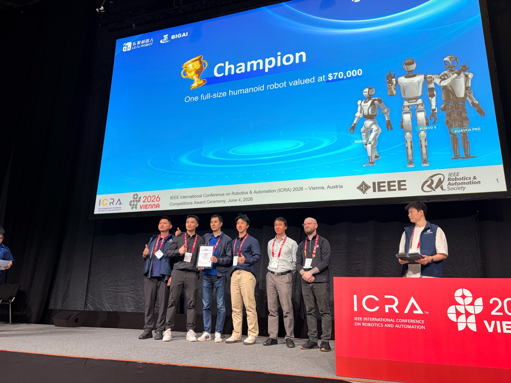

Champion · 1st place冠军 · 第一名 2026IEEE ICRA 2026 · ViennaIEEE ICRA 2026 · 维也纳
REAL-I: Real-world Embodied AI Learning ChallengeREAL-I：真实世界具身智能学习挑战赛
Won the inaugural challenge with an end-to-end robot learning and deployment system — through simulation, real-robot rounds, and an on-site physical-robot final. The win also brought our lab a $70,000 humanoid robot. Team NUS-CLEAR: Jiaming Wang, Jizhuo Chen, Diwen Liu; advisor Harold Soh.凭借端到端的机器人学习与部署系统，赢得首届挑战赛——历经仿真赛、真机轮次，以及现场实体机器人决赛。实验室也因此获得一台价值 7 万美元的人形机器人。NUS-CLEAR 团队：Jiaming Wang、Jizhuo Chen、Diwen Liu；指导教授 Harold Soh。